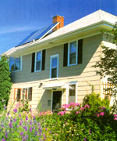

Solar doesn't have to be unsightly: At Inn Serendipity , a bed-and-breakfast in Browntown, Wisconsin, three 4-by-8-foot flat-plate collectors sit comfortably on the south-facing rooftop. They provide up to 70 percent of the home's domestic hot water needs.